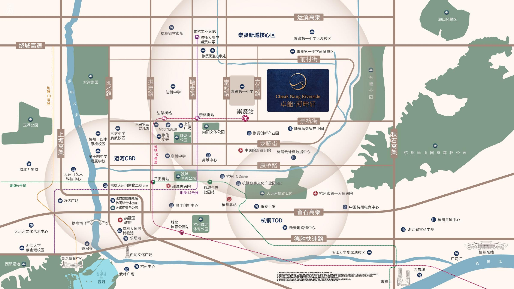
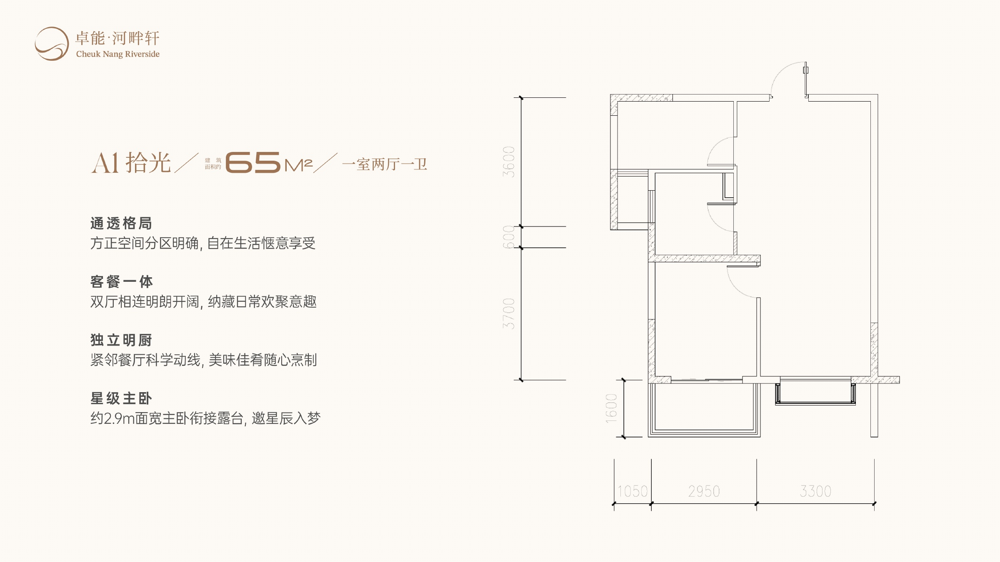
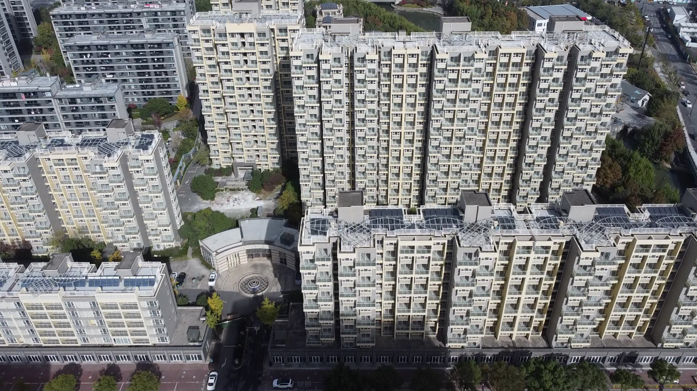

如果你平时就在杭州城北活动，崇贤值得抽半天实地走一圈。先别忙着听“以后会更方便”，挑一个工作日，从准备买的那栋楼出发，完整走到公司。能不能长期接受这段路，比一句“板块有潜力”有用得多。
卓能河畔轩有个比较直接的特点：不是只能对着沙盘想象。官网已经展示楼栋、园区和临水环境，户型从约65㎡到138㎡。但实景归实景，价格、房源和销售文件仍要单独问清楚。
先走一遍工作日：15号线还不能替你上班
项目官网称，与地铁15号线相关站点约400米直线距离。这里最容易忽略两个字：直线。站口开在哪里、从小区哪个门走、要不要绕路，都会改变最后的步行时间。
15号线一期目前仍是建设项目。看房那天可以问未来线路，但算今天的通勤，只算已经能用的道路和公交。最好早高峰、晚高峰各跑一次；如果经常加班，再看晚上九点以后怎么回家。

再算钱：别只盯着首付
有人搜“崇贤有没有150万以内的房子”，真正想问的是：手里的钱能不能把这套房稳稳买下来。除了首付，还要把契税、维修资金、车位或租位、装修添置和每月通勤放进去。
正式价格没有确认前，历史报价和“起步价”都不能替你做预算。到了售楼处，直接把目标房号、建筑面积、总价、付款节点和额外费用写在一张纸上。
| 现场问什么 | 要拿到什么答案 | 别漏掉 |
|---|---|---|
| 这套多少钱 | 具体房号的一房一价 | 宣传起价未必对应目标房源 |
| 每月还多少 | 不同期限和利率下的月供 | 收入变化后还能否承受 |
| 签约前还要交什么 | 税费、维修资金和其他费用 | 适用政策与家庭住房情况 |
| 住进去每月花多少 | 物业、车位、通勤和维护 | 长期费用比一次优惠更重要 |
先缩小选择范围：按家庭人数排出优先看的户型，再拿具体房号核对价格和费用。去做户型匹配 →
房间够不够用，现场比户型名称更重要
卓能河畔轩官网目前展示四种户型：约65㎡一室、67㎡两室、88㎡三室和138㎡三室。两个人住，不一定非要两室；如果长期在家办公，一间能关门的工作区可能比大客厅更重要。三口之家看88㎡三室，也别只数房间，要看次卧放下床和衣柜后还能不能正常走动。
这四种户型是官网当前展示的5#产品，不是整个项目的全部清单，也不等于今天一定有房可选。现场最好量一下主卧净宽、次卧床位、餐桌动线和收纳墙，再回头看“几室几厅”。

配套好不好，晚上八点再看一次
白天看房时，路上不堵、店铺都开着，很容易觉得什么都方便。真正要用的是下班后的超市、餐饮、公交、医疗服务和老人孩子能走的路。工作日晚间再来一次，往往比看区位图更接近日常生活。
看卓能河畔轩时，可以从目标楼栋出发，把常用路线实走一遍；临水环境也不要只拍照，顺便观察夜间照明、声音和步行感受。学校尤其要单独查，“附近有学校”不代表对应入学资格。
说回卓能河畔轩：为什么值得专门跑一趟
第一，现场能看的东西比较多。楼栋、园区、楼间关系和临水环境不必全靠效果图想象。去的时候别只拍景观，站在目标楼栋附近待十分钟，听声音、看采光，也看看下雨天可能经过的路线。
第二，户型跨度比较实用。从约65㎡一室到138㎡三室，独居、两口之家、三口之家和改善需求都能找到参照。你不必先接受销售人员的推荐，可以先按家庭人数筛掉不合适的面积。

第三，项目与15号线崇贤站相关线路段距离较近，官网给出的说法是约400米直线距离。它值得现场走一次，但不能提前写成“地铁口”或已经兑现的通勤时间。
第四，项目属于香港联交所上市公司卓能集团的杭州物业，股份代号131。集团公开资料披露了项目整体规模和滨水布局，信息来源比只有营销海报更容易追溯；这属于信息透明度，不等于对交付或投资回报的保证。
先选面积，再约看房
官网展示约65、67、88和138㎡四种户型。先按居住人数选两种，到现场重点看净尺寸和真实朝向。
到了现场，四件事要拿到书面答案
- 现在有效的销售许可对应哪些楼栋和房源；
- 目标房号的面积、总价、付款节点和交付标准；
- 展示空间与目标房源是不是同楼栋、同朝向、同标准；
- 口头介绍能不能在合同、附件或现场公示里找到。
已经能看到楼栋，并不意味着这些文件可以省略。本文也不使用“已开盘、现房即住”之类尚未由最新许可文件确认的说法。
什么情况下，可以继续往下谈
通勤跑过、总价算过、房间量过、文件也看过，剩下的才是朝向、楼层和具体房号的选择。如果其中任何一项只能得到“大概”“以后会有”或口头保证，就先把问题记下来，不用当场做决定。
如果你只是想知道这趟有没有必要跑，也可以先把工作地点、家庭人数和关注面积告诉工作人员。先判断路线和户型，再决定是否预约，会比到场后从头听一遍更省时间。